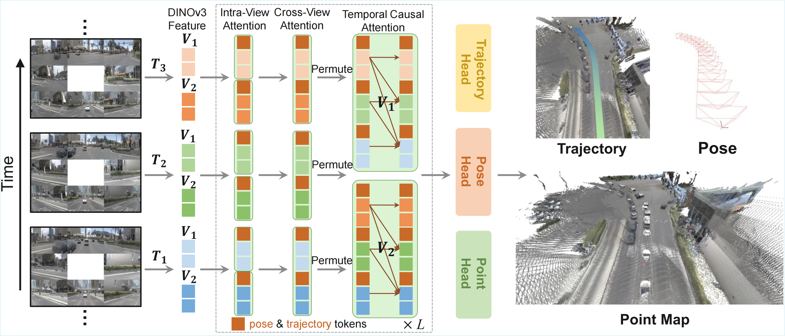
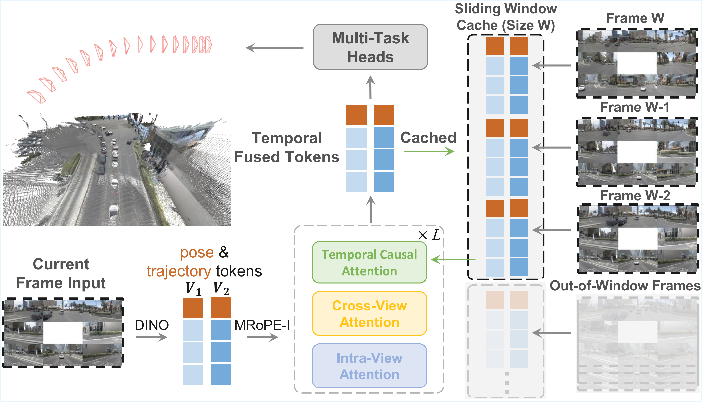
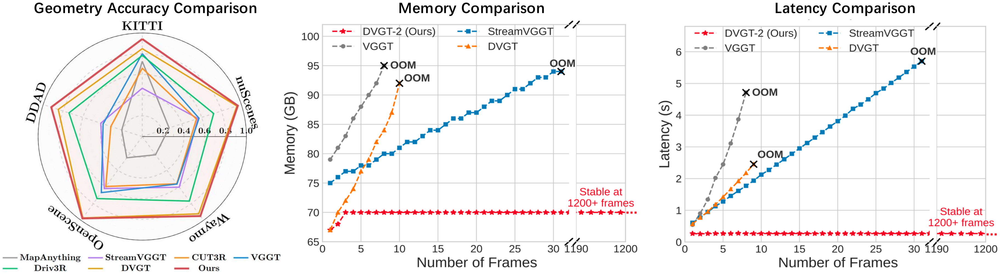

We propose DVGT-2, a streaming Vision-Geometry-Action (VGA) model for efficient, real-time autonomous driving. Given unposed multi-view image sequences, DVGT-2 jointly predicts dense 3D scene geometry and future trajectories in a fully online manner. By employing temporal causal attention and a sliding-window feature cache, our model enables on-the-fly inference with a constant O(1) computational cost, seamlessly supporting infinite-length, continuous driving.

DVGT-2 consists of three core components: an image encoder, a geometry transformer, and multi-task prediction heads. The model is trained to jointly perform dense geometry reconstruction and trajectory planning across full video sequences. By applying temporal causal attention, we ensure the model attends only to past frames while planning for the future at any given time step. This auto-regressive design naturally aligns the training process with streaming inference and significantly boosts training efficiency.

During online inference, we maintain a sliding-window feature cache to store historical intermediate representations within a certain interval. This mechanism allows DVGT-2 to efficiently reuse previously computed features and completely avoid redundant computations. As a result, the model achieves a constant O(1) computational complexity, enabling consistent geometry reconstruction and robust trajectory planning across infinite-length driving scenarios.

DVGT-2 achieves SOTA performance in both 3D geometry reconstruction and trajectory planning across diverse datasets. Relying solely on annotation-efficient geometry supervision, it operates entirely without sparse perception labels or language annotations. By leveraging an efficient sliding-window streaming strategy, DVGT-2 enables real-time, infinite-length online inference with a constant memory cost and a mere 266ms per-frame latency, paving the way for next-generation autonomous driving.

@inproceedings{zuo2026dvgt-2,
title={DVGT-2: Vision-Geometry-Action Model for Autonomous Driving at Scale},
author={Zuo, Sicheng and Xie, Zixun and Zheng, Wenzhao and Xu, Shaoqing and Li, Fang and Li, Hanbing and Chen, Long and Yang, Zhi-Xin and Lu, Jiwen},
booktitle={arXiv preprint arXiv:2604.xxxxx},
year={2026}
}